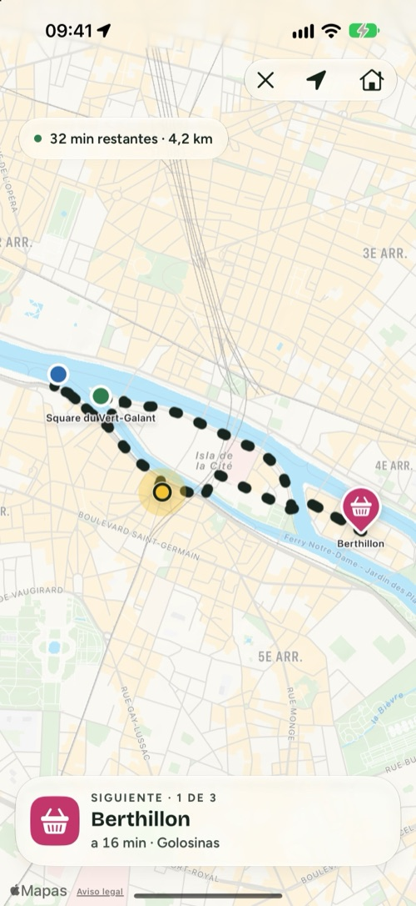
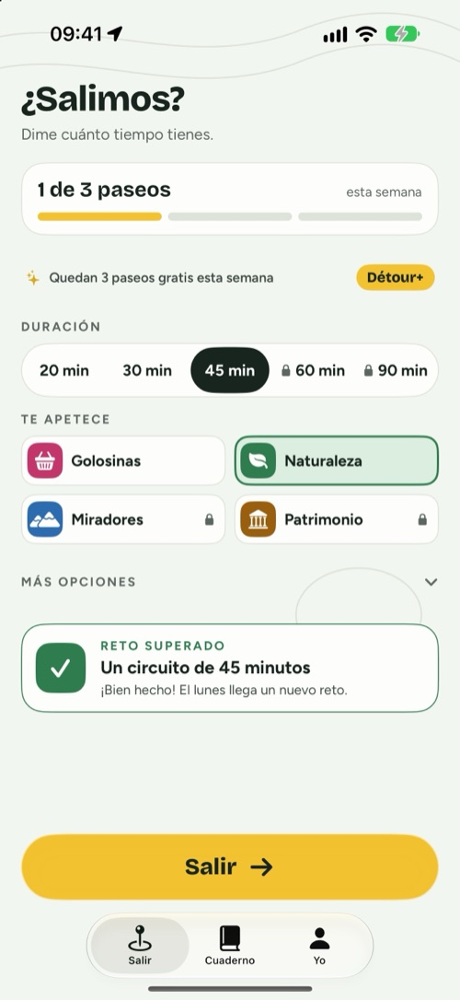
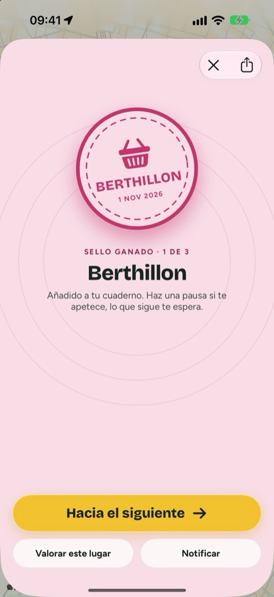
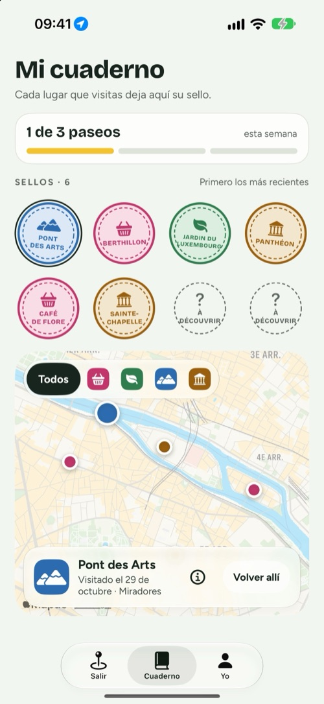

Détour
Dime cuánto tiempo tienes y te daré un buen motivo para salir a caminar.
Para iPhone, iPad y iPhone Duo · Gratis, con Détour+ opcional

Tres decisiones y ya estás fuera.
Détour no te dice cómo ir de A a B. Te da una razón para ir y te devuelve a casa.
Tu duración
20, 30, 45 minutos o más. El circuito sale de donde estás y vuelve allí.
Tu antojo
Golosinas, naturaleza, miradores o patrimonio: 2 a 4 lugares reales que alcanzar por el camino.
Salir
Sigue el trazado. Cada lugar que alcanzas se valida solo y deja un sello en tu cuaderno.
Pretextos para caminar, no visitas guiadas.
Un paseo en cuatro pantallas.



Cerrado en la mano, abierto sobre el mapa.
- Cerrado, lo esencial cabe en la pantalla externa: la duración, el antojo y «Salir».
- Abierto, los ajustes a un lado y el circuito que se dibuja al otro.
- Modo sorpresa: los siguientes lugares se revelan por el camino.
- Durante el paseo, el siguiente lugar y la distancia se quedan en la pantalla de bloqueo y en la Dynamic Island.
- Objetivo semanal, insignias, un reto cada semana y cada paseo guardado en Salud si quieres.

Gratis para coger el hábito. Détour+ para llegar más lejos.
Paseos ilimitados, los cuatro antojos, circuitos de hasta 90 minutos con el terreno a tu elección y el modo sorpresa.
Anual
Mejor valoral año, con 7 días de prueba gratis
Mensual
Mes a mesal mes, sin permanencia
De por vida
Una vezuna sola compra, para siempre
Gratis: 3 paseos por semana, los antojos Naturaleza y Golosinas, hasta 45 minutos, el cuaderno y las insignias. Precios según el país. Las suscripciones se gestionan y se cancelan en los ajustes de tu cuenta de Apple.
Tu paseo es cosa tuya.
Nada que crear, nada que recordar. Tu cuaderno se queda en tu iPhone.
Sirve para trazar el circuito y validar los lugares, solo durante el paseo.
Ningún rastreador publicitario. Los detalles están en la política de privacidad (en francés).